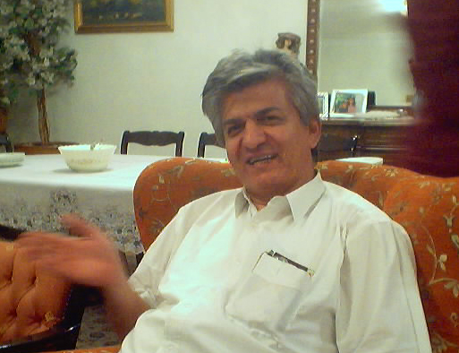
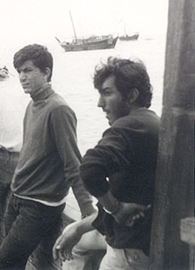
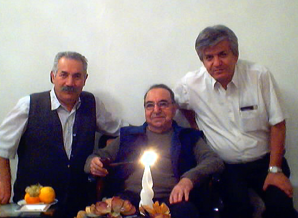

We met as members of Aryamehr University's Mountain Club back in 1972, and have been friends since. He graduated as a mechanical engineer and is now the successful CEO of a coil spring manufacturing company, Fanar Lool.

Reza Najafi and Ali Parsa, April
1972
This picture was taken on a motor-boat (lench, as
it is called locally) going from Bandar Abbas to the Qeshm island.
 |
In the recent years Reza has been especially kind and generous to me and my family by taking care of my father while I was away in the US. |